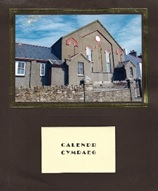
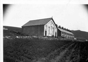
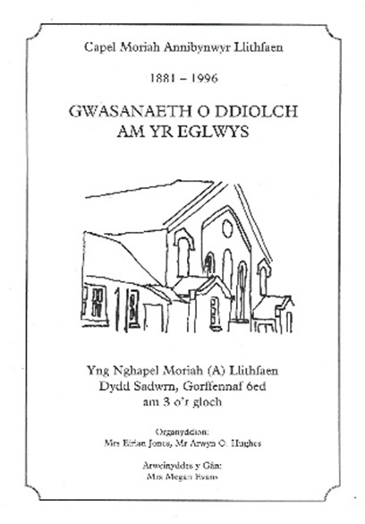
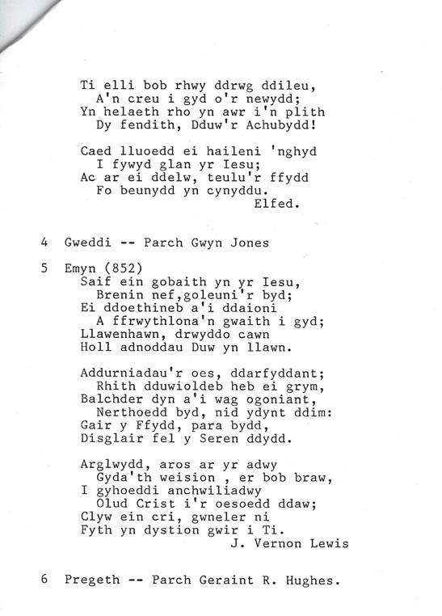
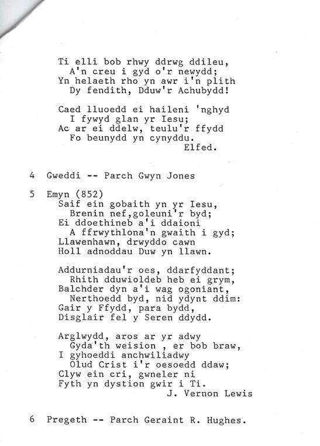
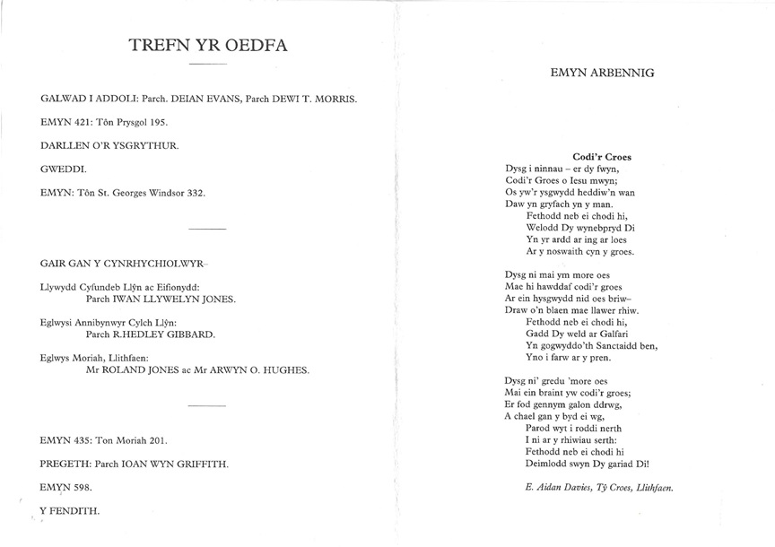
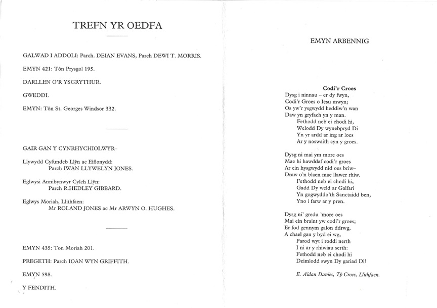

Capel Moreia – Capel Annibynnwyr
Calendr Capel MoreiaAr 29 Awst 1880, cafwyd cyfarfod yn ysgubor Llithfaen Uchaf i drafod codi achos i’r Annibynwyr. Prynwyd tir am £61.14.0. Codwyd y capel am £189. Roedd ynddo ddigon o le i 300 o addolwyr. Ar ôl adeiladu’r capel cyntaf chwythwyd ei do ymaith mewn storm a disgynnodd y cyfan i gae cyfagos. Ar 7 ac 8 Tachwedd 1881, cafwyd cyfarfodydd pregethu i sefydlu ac agor y capel a’i alw yn Capel Moreia. Daeth yr achos i ben ar 25 Mawrth 1997 a chafwyd cyfarfod datgysylltu dan ofal y Parch Iwan Llewelyn Jones.
Ar 29 Awst, 1880 cafwyd cyfarfod yn ysgubor Llithfaen Uchaf i drafod codi achos o’r Annibynwyr yn Llithfaen. Ymaelododd 14 y noson honno. Symudwyd ymlaen i brynu darn o dir am £61.14.0. Cost codi’r capel oedd £189. Roedd ynddo ddigon o le i 300 o addolwyr. Robert Jones, Ceidio a Robert Williams, oedd yr adeiladwyr.
Capel Moreia, Annibynwyr.
Ar 7 ac 8 Tachwedd 1881 cafwyd cyfarfodydd pregethu i sefydlu ac agor y capel. Dewidwyd ei alw yn Capel Moreia. Y ddau ddiacon cyntaf oedd Robert Williams, Llithfaen Bach a W. Davies, Eifl View.
Yn ddiweddarach codwyd John Williams, Bryncelyn, Robert Jones, Tan y Foel, John Owen, Disgwylfa, John Griffith, Hafod a William Williams, Gwag y Noe yn ddiaconiaid.
Yn 1893 cafwyd offeryn cerdd a’r cyfeilyddion oedd Grace, Phoebe a Miriam J.R. Owen, tair chwaer ac un brawd.
Yn 1893 ymunodd Moreia efo Salem, Fourcrosses, gyda’r bwriad o alw gweinidog. Urddwyd y Parch, James Davies yn weinidog a bu yn Llithfaen hyd 1913. Claddwyd ef ym mynwent Capel Helyg.
Arweinydd y gân oedd Evan Roberts, tad Cemlyn Roberts, gyda Richard Pritchard.
25 Tachwedd daeth y diwygiad i Moreia a bu bri mawr ar yr achos. Cliriwyd dyled y capel sef £1 000 yn 1906.
 Tu mewn i Gapel Moreia.
Tu mewn i Gapel Moreia.
Arglwydd, rho dy wên yn helaeth
Wrth ymadael o’r gwasanaeth
Gad in ddychwel mewn llawenydd
Adref, gyda bendith newydd.
Os pechasom yn dy erbyn
Drwy i bethau’r byd ein dilyn,
Maddau inni ein camweddau
A sangteiddia ein serchiadau.
Arwain ni i’n cartrefleoedd
Arwain ni dan wlith y nefoedd;
Sŵn awelon Pen Calfaria
Fyddo’n aros wedi’r oedfa.
Yn 1932 adeiladwyd y festri, rhoddwyd y tir gan Evan Jones a E. Edwards, Llithfaen Isaf.
Yn 1943 ordeiniwyd y Parch Arthur Thomas yn weinidog ar Moreia a Salem, y Ffôr. Bu yma hyd 1948.
Dyma atgofion Ellen Evans, Alpha:
"Gweithiwyd yn galed i godi achos yr Annibynwyr yn y pentref hefyd. Cychwynnwyd hwn mewn hen ysgubor, ac wedi adeiladu’r capel cyntaf chwythodd y gwynt ei do ymaith mewn storm a disgynnodd I gyd I gae cyfagos. Y gweinidog yn wylo yn hidl am y golled, ond daeth llewyrch buan ar bethau."
 Dymchwel Capel Moreia
Dymchwel Capel Moreia
Rhaglen Oedfa olaf Capel Moreia

 

 
